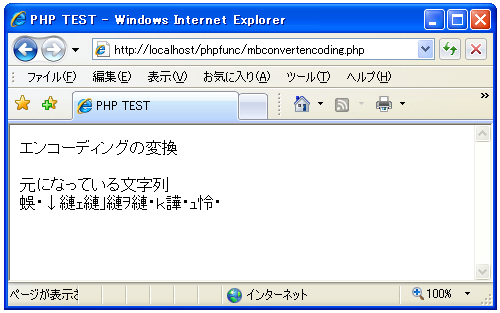
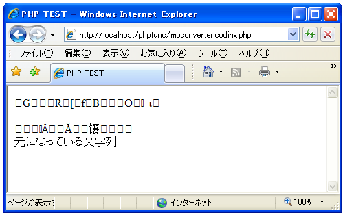

文字エンコードを変換する(mb_convert_encoding)
文字のエンコードを変換する方法を確認します。「mb_convert_encoding」関数を利用します。
mb_convert_encoding
string mb_convert_encoding ( string $str,
string $to_encoding
[, mixed $from_encoding] )
mb_convert_encoding() は、文字列 strの文字エンコーディングを from_encoding から to_encoding に変換します。 引数： $str 対象の文字列 $to_encoding 変換後のエンコーディング $from_encoding 変換前のエンコーディング 戻り値： エンコードが変換された文字列
対象の文字列を指定したエンコーディングに変換します。1番目に引数には対象の文字列を格納した変数を指定します。2番目の引数には変換後のエンコーディングとして「EUC-JP」や「SJIS」などのエンコーディング名を指定します。
3番目の引数は省略可能ですが対象の文字列の変換前のエンコーディングを指定します。変換前のエンコーディングが分かっていればそのエンコーディングを指定します。不明な場合は可能性があるエンコーディングを順にカンマで区切って記述します。「auto」を指定した場合には「ASCII,JIS,UTF-8,EUC-JP,SJIS」と記述した場合と同じです。
具体的には次のように記述します。
$str = "元になっている文字列"; $str = mb_convert_encoding($str, "JIS", "SJIS");
この場合は「SJIS」で記述された文字列のエンコードを「JIS」に変換します。
$str = "元になっている文字列"; $str = mb_convert_encoding($str, "JIS", "auto");
この場合は元の文字列のエンコーディングを「ASCII」「JIS」「UTF-8」「EUC-JP」「SJIS」の順番で調べて、そのエンコーディングから「JIS」に変換します。
サンプルプログラム
では実際に試して見ます。
<html> <head><title>PHP TEST</title></head> <body> <p>エンコーディングの変換</p> <?php $str = "元になっている文字列"; print($str."<br>"); $str = mb_convert_encoding($str, "UTF-8", "auto"); print($str); ?> </body> </html>
上記ファイルをWWWサーバに設置しブラウザ経由で見ると下記のように表示されます。

変換された文字列は文字化けしていますがブラウザの設定を「UTF-8」にすると次のように表示されます。

( Written by Tatsuo Ikura )

著者 / TATSUO IKURA
初心者～中級者の方を対象としたプログラミング方法や開発環境の構築の解説を行うサイトの運営を行っています。